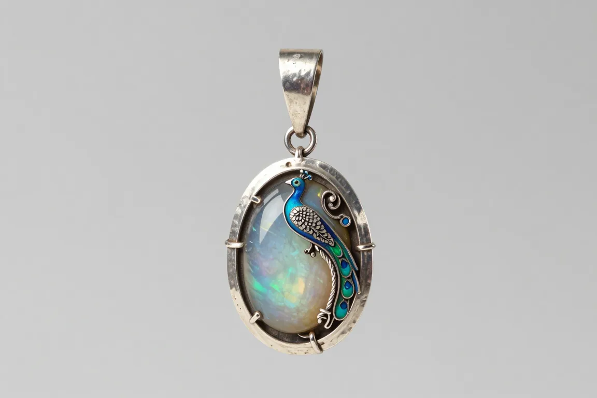

fashion · 1890–1920 · also: Guild jewellery, Hand-made studio jewels of the Arts and Crafts movement
Hand-made jewels of silver, enamel and soft stones, from the guilds and studios of Britain after 1890. They show visible hammer marks, wire work and cabochons in place of the bright, cut stones of the shops.

Core thesis
A jewel is a piece of craft. The maker's hand, a modest metal and a soft stone count for more than the weight of the gold.
Design principles
Make each piece by hand from a drawing of your own, and leave the hammer marks and the file marks on the metal.
Choose silver, copper and low-carat gold in place of platinum and large diamonds.
Set cabochon stones such as moonstone, opal, turquoise and amethyst in a plain bezel.
Use enamel in small areas of blue, green and white, fired on silver or gold.
Twist silver wire and small beads into tendrils, leaves and birds, and join them with open, visible solder.
Draw the form from a natural plant or a medieval jewel: a hawthorn, a peacock, a pomegranate.
Sign the piece with the maker's mark, not a factory mark.
Keep each piece to one idea and to two or three materials.